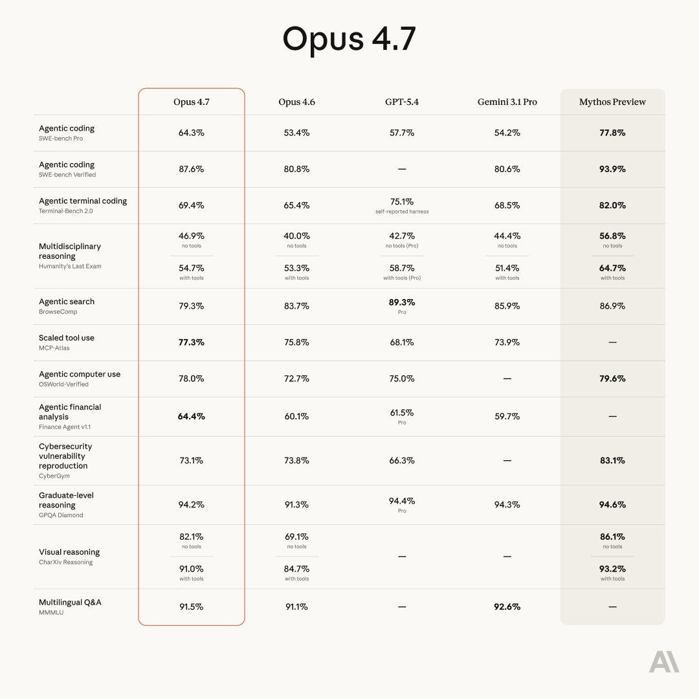

Claude opus4.7出了？！
官方介绍：
Opus 4.7 是 Anthropic 的 Opus 系列的下一代产品，专为长时间运行、异步的智能体设计。在继承 Opus 4.6 的编程和智能体优势的基础上，它能在复杂的多步骤任务中提供更强的性能，并在扩展工作流程中实现更可靠的智能体执行。它特别适用于任务随时间展开的异步智能体管道——大型代码库、多阶段调试以及端到端的项目协调。
除了编程能力，Opus 4.7 还带来了改进的知识工作能力——从起草文档、制作演示文稿到数据分析。它能在极长的输出和长时间会话中保持连贯性，使其成为需要持久性、判断力和跟进能力的任务的理想默认选择。

官方介绍：
Opus 4.7 是 Anthropic 的 Opus 系列的下一代产品，专为长时间运行、异步的智能体设计。在继承 Opus 4.6 的编程和智能体优势的基础上，它能在复杂的多步骤任务中提供更强的性能，并在扩展工作流程中实现更可靠的智能体执行。它特别适用于任务随时间展开的异步智能体管道——大型代码库、多阶段调试以及端到端的项目协调。
除了编程能力，Opus 4.7 还带来了改进的知识工作能力——从起草文档、制作演示文稿到数据分析。它能在极长的输出和长时间会话中保持连贯性，使其成为需要持久性、判断力和跟进能力的任务的理想默认选择。

Introducing Claude Opus 4.7, our most capable Opus model yet.
It handles long-running tasks with more rigor, follows instructions more precisely, and verifies its own outputs before reporting back.
You can hand off your hardest work with less supervision. https://t.co/PtlRdpQcG5
It handles long-running tasks with more rigor, follows instructions more precisely, and verifies its own outputs before reporting back.
You can hand off your hardest work with less supervision. https://t.co/PtlRdpQcG5